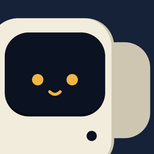
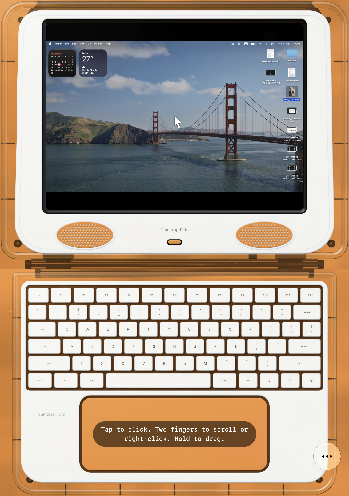
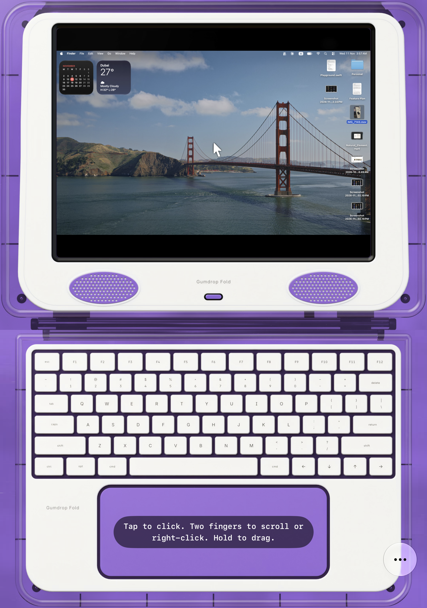
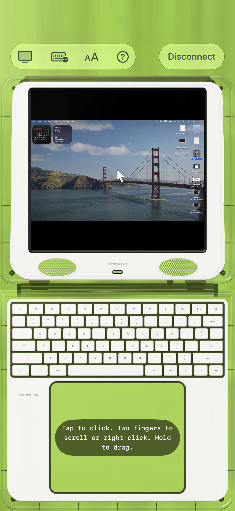
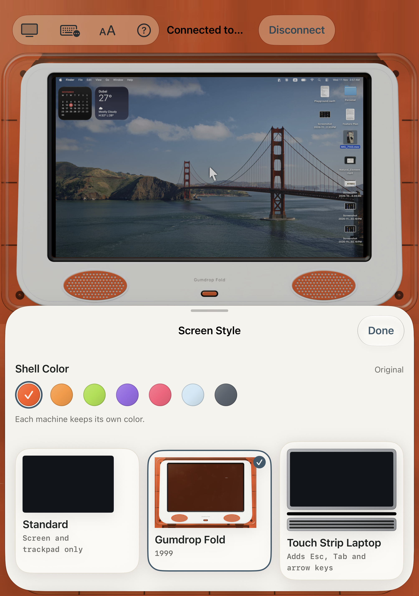

Tabletop Remote
VNC Screen Sharing & Trackpad · App Store · updated 15 November 2026
What is new
Version 1.0.3 adds Gumdrop Fold, a Screen Style that draws the Mac's live desktop inside a translucent clamshell laptop, in seven shell colours: Original, Tangerine, Lime, Grape, Strawberry, Ice and Smoke. The eleven rendered bodies (Gumdrop Fold and the ten shelf machines) now fill the whole display on iPhone, iPad and iPhone Duo, with the spare room given to the Mac's picture and the trackpad. Held sideways, the keys and the trackpad sit side by side under the picture. Keyboard and Reading Size each have their own menu in the toolbar.
Facts
- Version
- 1.0.3 (build 6), built with Xcode 27.1
- Platforms
- iPhone, iPad and iPhone Duo (iOS 17 or later)
- Languages
- 26, including English (US, UK, Australia, Canada), Spanish (Mexico, Spain), French, German, Japanese, Chinese, Arabic and Hindi
- Price
- Free, no ads, no account
- Privacy
- The picture and the typing travel only between the device and the Mac over the local network. No relay server. Anonymous usage statistics can be turned off in Settings.
- Accessibility
- The shell colour swatches and the touch strip keys carry VoiceOver labels. Reading Size zooms the Mac's picture on small screens.
- Window
- 11 to 23 December 2026
- Developer
- Hemal Modi, one developer in Dubai
Screens
Device captures of the screens described in the nomination. No marketing frames.



